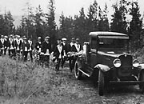
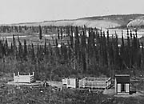
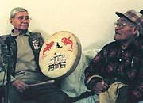
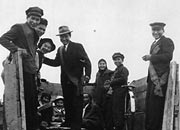
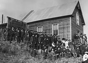
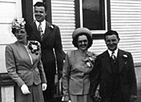

Dahyè sùkùsen
Prière bahai, dans la langue tagish : Actes de l’atelier d’alphabétisation tagish.
Les Premières nations croient qu’un lien étroit existe entre les humains et les animaux desquels dépend leur survie. Les Autochtones ont des traditions orales précieuses concernant leur monde et ceux qui y vivent. Ils sentent que des esprits puissants ont une influence sur le monde et sur eux.
Au milieu des années 1900, les croyances traditionnelles ont commencé à subir l’influence du christianisme, mais les Premières nations ont continué à respecter leurs croyances spirituelles. Le potlatch est un événement particulièrement important. Il sert à souligner les décès, les cérémonies commémoratives tenues un ou deux ans suivant un décès. Il sert également à célébrer une occasion spéciale, comme le choix du nom d’un enfant ou la première chasse. Le potlatch est offert en l’honneur du clan opposé. On mange, on chante, on danse et on donne des cadeaux.
Au cours des années, le Yukon est devenu la demeure de personnes ayant des croyances différentes. Les représentants d’églises sont d’abord venus comme missionnaires afin de travailler avec les Premières nations. L’archidiacre anglican Robert McDonald est un des premiers à avoir établi une mission. Il s’est installé à Fort Yukon en 1862. L’Église catholique a également été active dans le Nord. Dès l’époque de la ruée vers l’or, des personnes ayant des croyances très variées se sont installées dans le territoire. La diversité de la spiritualité est encore présente aujourd’hui.
Passer au tableau Emplois, carrières et métiersL’endroit est béni
(Ci-dessus) Le clergé devait être mobile et accessible. Notez la tente et les cordes de bois du révérend Robert Ward, à son campement de Lower Laberge, à l’occasion de son premier voyage en provenance de Carmacks (juin 1993).
AY, collection Ward, nº 8774
Francs-maçons à des funérailles au cimetière, au centre-ville de Whitehorse (vers 1930).
AY, collection Good, nº 9606
Cimetière autochtone, près de Whitehorse (1915). Les premières huttes de sépulture étaient faites de bois rond dolé, taillé à l’herminette. Les huttes plus récentes étaient faites de bois scié ou de planches en clin.
AY, collection Janes nº 4331
Aînés George Dawson et Frankie Jim au potlatch pour Johnnie Johns.
AY, collection Johnson
Groupe dans la boîte d’un camion, en route pour un mariage, Teslin.
AY, collection Drean, 89/5 nº 2
Rassemblement des paroissiens à l’extérieur de l’église, probablement dans les champs aurifères du Klondike (vers 1900).
AY, collection Johns, 82/318 nº 140
Les nouveaux mariés Babe et Jimmy Marr (d) avec Jimmy et Kay Smith sur les marches du magasin des alcools (où était également posté le juge de paix), le 13 juin 1947.
AY, collection Turner, 88/16 nº 81A